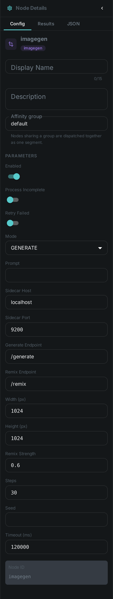
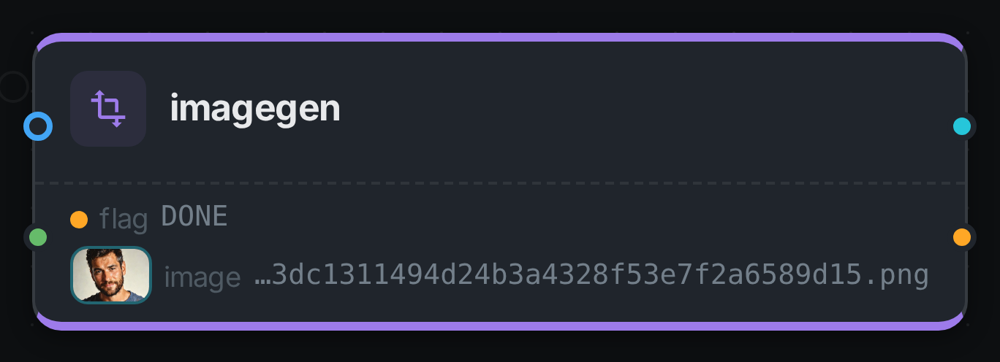
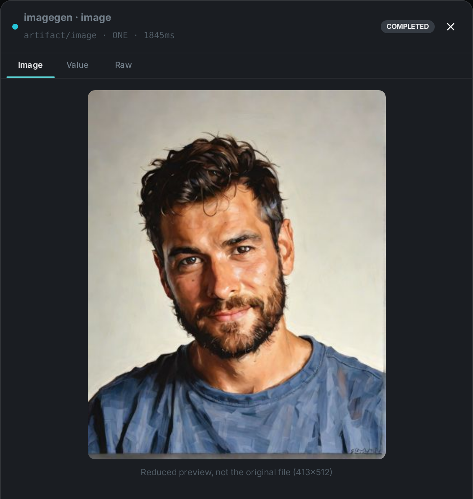

The image-generation node generates a new image with a diffusion model. Unlike the analysis
nodes, which describe a property of the media itself, imagegen produces a fresh image — either
from a text prompt (GENERATE) or by remixing the asset’s own image guided by a prompt (REMIX) —
and attaches it to the asset.
The diffusion model runs behind a small HTTP sidecar, so the node stays a pure client and needs no
model runtime of its own. The sidecar is model-agnostic, and two are shipped: one serving
SDXL-Turbo by default (ungated, fast) and one serving Mage-Flow, whose weights are MIT
licensed and may therefore be used commercially. Both speak the same contract — pick one with the
port option.
Kind |
|
Applies to |
Image assets |
Input ports |
A generation |
Output ports |
|
Requirements |
A running image sidecar ( |
Persists to |
|
Configuration

Set these in the panel above, or in the node’s options block in a pipeline definition:
| Option | Meaning |
|---|---|
|
|
|
The generation prompt (required) |
|
Address of the image sidecar (default |
|
Output size for |
|
Denoise strength for |
|
Number of inference steps (default |
|
Optional RNG seed for reproducible output |
Seeing it run
Turn on Debug Mode and every node keeps what it produced, on the
card itself. Below is a real run in REMIX mode over pexels-photo-2379005.jpeg, prompted for
"the same portrait as an oil painting, warm light, visible brush strokes".

The image port carries an artifact, so the card shows the picture rather than its path. REMIX is
the mode worth photographing: GENERATE, the shipped default, ignores the incoming media entirely
and answers from the prompt alone.

Running the sidecar
The sidecar is a small FastAPI service. A minimal run with the default (ungated) model:
cd sidecars/ideogram-sidecar
python -m venv venv && ./venv/bin/pip install -r requirements.txt
./venv/bin/uvicorn server:app --host 0.0.0.0 --port 9200
# smoke test
curl -s -X POST localhost:9200/generate \
-H 'content-type: application/json' \
-d '{"prompt":"a red panda astronaut, studio lighting"}' -o out.pngChoosing the model
| Sidecar | Default port | Weights |
|---|---|---|
|
|
SDXL-Turbo — non-commercial community licence (Ideogram 4 optional, gated, also non-commercial) |
|
|
Mage-Flow 4B — MIT, commercial use permitted. Stronger prompt following and legible text, and it also handles |
For Mage-Flow, set steps to match the checkpoint: 4 for the default Turbo variant, 20 for the
RL-aligned one, 30 for Base. The node always sends steps, so leaving it at the 30 default would
run a 4-step model seven times longer than necessary. Its strength option has no effect on
Mage-Flow, which edits from an instruction rather than a denoise strength. Mage-Flow needs a GPU with
at least 24 GB; it also applies a content filter that cannot be disabled, and a rejected prompt is
reported as an error rather than producing an image.
Use Cases
-
Illustrations & hero images — generate on-brand artwork from a prompt for a catalogue entry.
-
Restyling — remix an existing asset into a new style while preserving its composition.
-
Placeholders & variations — produce derived visuals for review workflows.
The generated PNG is written to the worker’s local imagegen_bin cache and a node-result ledger row
records that the node ran for the asset.